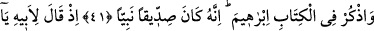
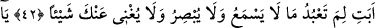
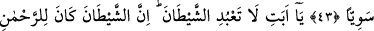
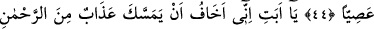
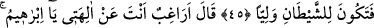
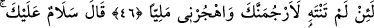
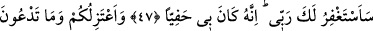
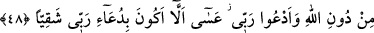
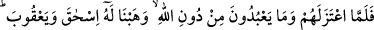
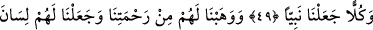
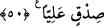
HZ. İBRÂHİM’İN
BABASINA DİNİ
TEBLİĞ ETMESİ
41. Kitap’ta İbrahim’i de an! Gerçekten o, çok doğru bir peygamberdi.
42. Hani babasına demişti ki: “Babacığım, işitmeyen, görmeyen ve sana hiçbir
faydası olmayan şeylere niçin tapıyorsun?”
43. “Babacığım, bana sana gelmeyen bir bilgi geldi; bana uy, seni düzgün bir yola
ileteyim.”
44. “Babacığım şeytana tapma, çünkü şeytan, Rahman’a isyan etmiştir.”
45. “Babacığım, ben sana Rahman’dan bir azabın dokunmasından korkuyorum. O
zaman, şeytanın dostu olursun.”
46. (Babası) dedi ki: “Ey İbrahim! Sen benim tanrılarımdan yüz mü çeviriyorsun?
Eğer vazgeçmezsen, andolsun seni taşlarım. Uzun süre benden ayrıl, git!”
47. (İbrahim): “Selam sana, senin için Rabb’imden mağfiret dileyeceğim.
Doğrusu O, bana çok lütufkârdır.” dedi.
48. “Sizden de, Allah’tan başka taptıklarınızdan da ayrılıyor ve sadece Rabb’ime
yalvarıyorum. Umarım ki, Rabb’ime yalvarmakla bahtsız olmam.”
49. Onlardan ve onların Allah’tan başka taptıklarından ayrılınca biz ona İshak’ı